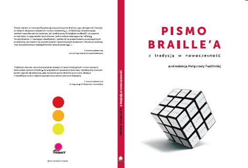
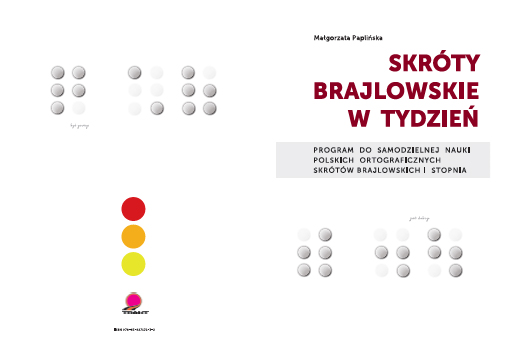
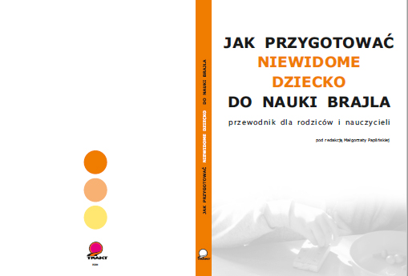
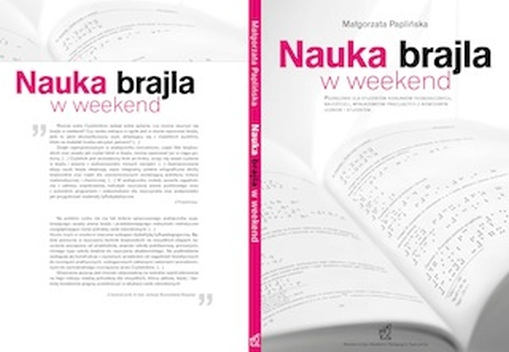

Bola Ł, Radziun D, Siuda-Krzywicka K, Sowa JE, Paplińska M, Sumera E and Szwed M (2017) Universal Visual Features Might Be Necessary for Fluent Reading. A Longitudinal Study of Visual Reading in Braille and Cyrillic Alphabets. Front. Psychol. 8:514. doi: 10.3389/fpsyg.2017.00514 https://www.ncbi.nlm.nih.gov/pubmed/28421027
Siuda-Krzywicka K., Bola Ł., Paplińska M., Sumera E., Jednoróg K., Marchewka A., Śliwińska M., Amedi A., Szwed M. (2016). Massive cortical reorganization in sighted Braille readers. Elife, 5:e10762. doi: 10.7554/eLife.10762 https://elifesciences.org/articles/10762
Bola Ł., Siuda-Krzywicka K., Paplińska M., Sumera E., Hańczur P., Szwed M. (2016). Braille in the sighted: Teaching tactile reading to sighted adults. PLOS ONE, 11(5). e0155394. doi:10.1371/journal.pone.0155394 http://journals.plos.org/plosone/article?id=10.1371/journal.pone.0155394
Paplińska M. (red.) (2016). Pismo Braille'a. Z tradycją w nowoczesność. Fundacja Polskich Niewidomych i Słabowidzących „Trakt”. Warszawa, s. 189 PDF ze spisem do pobrania

Paplińska M. (2016). Znaczenie czytania dotykowego i jego charakterystyka a bariery mentalne osób niewidomych i ociemniałych wobec pisma Braille'a. W: M. Paplińska (red.) Pismo Braille'a. Z tradycją w nowoczesność. Fundacja Polskich Niewidomych „Trakt”. Warszawa, s.11-32.
Paplińska M. (2016). Pismo Braille'a wobec wyzwań współczesnej komunikacji osób niewidomych – komunikat z badań. W: M. Paplińska (red.) Pismo Braille'a. Z tradycją w nowoczesność. Fundacja Polskich Niewidomych „Trakt”. Warszawa, s. 89-100.
Czerwińska M., Paplińska M. (2016). System Braille'a, pisma alternatywne, polskie modyfikacje. W kręgu historycznych i współczesnych rozważań tyflologiczno-bibliologicznych. W: M. Paplińska (red.) Pismo Braille'a. Z tradycją w nowoczesność. Fundacja Polskich Niewidomych „Trakt”. Warszawa, s. 126-137
Paplińska M. (2016). Skróty brajlowskie w tydzień. Program do samodzielnej nauki Polskich Ortograficznych Skrótów Brajlowskich I Stopnia. Fundacja Polskich Niewidomych i Słabowidzących „Trakt”. Warszawa (wersja czarnodrukowa i w brajlu) PDF przykładowy 4.1.PDF do pobrania

Paplińska M. (2015). Młode pokolenie osób z niepełnosprawnością wzroku w paradoksie informacyjno-komunikacyjnym. W: Czerwińska K., Paplińska M., Walkiewicz-Krutak M. (red.) Tyflopedagogika wobec współczesnej przestrzeni edukacyjno-rehabilitacyjnej. APS, Warszawa.
Paplińska M. (2015). Niewidomy czytelnik – cyfrowy tubylec czy brajlowski analfabeta? O kryzysie umiejętności czytania dotykowego W: Czerwińska K., Paplińska M., Walkiewicz-Krutak M. (red.) Tyflopedagogika wobec współczesnej przestrzeni edukacyjno-rehabilitacyjnej. APS, Warszawa
Paplińska M. Witczak-Nowotna J. (2015). Indywidualny Plan Wsparcia ucznia niewidomego, jego rodziców i nauczycieli – studium przypadku W: M. Wójcik, B. Antoszewska (red.) Edukacja i rehabilitacja dzieci z niepełnosprawnością. UWM, Olsztyn, s. 161-182.
Bola, Ł., Siuda, K., Paplińska, M., Sumera, E., Jednoróg, K., Marchewka, A., Śliwińska, M., Szwed., M. (2014). The visual cortex is not exclusively visual, and plays a critical role in tactile Braille reading. fMRI, resting-state fMRI and TMS evidence from sighted Braille readers”. Washington, USA, Society for Neuroscience Annual Meeting , s. 47
Bola, Ł., Siuda, K., Paplińska, M., Sumera, E., Szwed., M. (2014). When the sighted brain goes tactile: neuroplasticity in sighted Braille learners tracked by resting-state fMRI and structural MRIt. Neuronus IBRO and IRUN Neuroscience forum, Kraków, Poland , s. 18
Siuda, K., Bola, Ł., Paplińska, M., Sumera, E., Szwed., M. (2014). Reading with your eyes closed: the preliminary effects of tactile Braille reading course for sighted measured with fMRI”. Neuronus IBRO and IRUN Neuroscience forum, Kraków, Poland, s. 18.
Siuda, K. Bola, Ł, Paplińska, M. Sumera, E., Szwed., M. (2014). Braille by touch and by sight: the preliminary results of a longitudinal fMRI study on multimodal reading in sighted subjects. Cognitive Neuroscience Society 21st Annual Meeting Programme, s. 93 http://www.cogneurosociety.org/documents/CNS_2014_Program.pdf
Paplińska M. (red.). (2012). Jak przygotować niewidome dziecko do nauki brajla. Przewodnik dla rodziców i nauczycieli. Fundacja Polskich Niewidomych i Słabowidzących „Trakt”. Warszawa

Paplińska M. (2012). Oswajanie z brajlem. W: M. Paplińska (red.) Jak przygotować niewidome dziecko do nauki brajla. Przewodnik dla rodziców i nauczycieli. Fundacja Polskich Niewidomych i Słabowidzących „Trakt”. Warszawa, s. 92-96
Paplińska M. (2012). Zaprzyjaźnić się z maszyną brajlowską. W: M. Paplińska (red.) Jak przygotować niewidome dziecko do nauki brajla. Przewodnik dla rodziców i nauczycieli. Fundacja Polskich Niewidomych i Słabowidzących "Trakt", Warszawa, s. 133-140
Paplińska M. (2012). Zabawa z tabliczką i dłutkiem. W: M. Paplińska (red.) Jak przygotować niewidome dziecko do nauki brajla. Przewodnik dla rodziców i nauczycieli. Fundacja Polskich Niewidomych i Słabowidzących "Trakt", Warszawa, s. 140 – 144
Paplińska M. (2012). Literatura dla rodziców i nauczycieli przydatna w pracy z małym niewidomym dzieckiem (dostępna w języku polskim). W: M. Paplińska (red.) Jak przygotować niewidome dziecko do nauki brajla. Przewodnik dla rodziców i nauczycieli. Fundacja Polskich Niewidomych i Słabowidzących "Trakt", Warszawa, s. 218 – 228
Paplińska M. (2009). Nauka brajla w weekend. Podręcznik dla studentów kierunków pedagogicznych, nauczycieli, wykładowców pracujących z niewidomym uczniem i studentem. Akademia Pedagogiki Specjalnej, Warszawa, s.162

Paplińska M. (2009). How to teach blind children reading of tactile drawings - needs of students and teacher approaches. 7th European Conference of ICEVI "Living in a Changing Europe", Trinity College Dublin, Ireland, 5th-10th July 2009
Paplińska M. (2008). Dziecko z niepełnosprawnością wzrokową na progu szkoły - przygotowania, możliwości i realne wsparcie. W: Gorajewska D. (red.) Wspomaganie dziecka z niepełnosprawnością w rodzinie i szkole. Stowarzyszenie Przyjaciół Integracji, Warszawa, s 132-141
Paplińska M. (2008). Przyszłość pisma Braille'a - rozwój czy schyłek? W: Czerwińska M., Dederko T. (red.) Niewidomi w świecie książek i bibliotek. Polski Związek Niewidomych, Kielce, s. 53-63
Paplińska M. (2008). Poznawanie pisma Braille'a przez niewidome dziecko - klucz do niezależności. W: Pilecka Wł., Bidziński K., Pietrzkiewicz M. (red.) O poznawaniu siebie i świata przez dziecko ze specjalnymi potrzebami edukacyjnymi. Wydawnictwo Uniwersytetu Przyrodniczo-Humanistycznego im. J. Kochanowskiego, Kielce, s. 397-402
Paplińska M. (2007). Approach to Teaching Braille - Comparative Analysis in Selected Countries. Proceedings of Tenth Biennial Conference Global Challenges in Special Needs Education: Past, Present, and Future. International Association of Special Education, The Faculty of Education and Centre for Advancement in Special Education, University of Hong Kong
Paplińska M. (2007). Wprowadzanie pisma Braille'a - brytyjskie i polskie podejście w nauczaniu niewidomych dzieci. Człowiek-Niepełnosprawność-Społeczeństwo nr 5, APS, Warszawa, s. 77-91.
Paplińska M. (2007). Bajka o Królewnie Śnieżce - francuski sposób przygotowania niewidomych dzieci do czytania i pisania pismem Braille'a. Szkoła Specjalna nr 1, s. 55-59
Paplińska M. (2007). Possibilities and adaptation scope of test problems for blind students. Żółkowska T. (Ed.). Special pedagogy - conceptions and the reality. Contexts of Special Pedagogy. Szczecin
Paplińska M. (2007). Czy dłoń może być okiem? - o czytaniu dotykowym niewidomych dzieci (w). Miejsce Innego we współczesnych naukach o wychowaniu, Jachimczak B., Olszewska B., Podgórska-Jachnik D. (red.) Łódź, SATORIdrukpl, s. 137-141
Gorajewska D., Paplińska M. (2007). Niewidomy czytelnik - fakty i mity związane z dostępem do tekstu pisanego (w). Biblioterapia - z zagadnień pomocy niepełnosprawnym użytkownikom książki T. 2, Fedorowicz M., Kruszewski T. (red.) Toruń
Kuczyńska-Kwapisz J., Paplińska M. (2006). Nauczanie pisma Braille'a w Polsce i za granicą. Dyskursy Pedagogiki Specjalnej 5. Pomiędzy teorią a praktyką. Cz. Kosakowski, A. Krause, S. Przybyliński (red.) UW-M Olsztyn
Paplińska M. (2006). Sposoby nauczania brajla w Polsce i wybranych krajach świata. Szkoła Specjalna nr 1, Warszawa, Wydawnictwo APS.
Paplińska M. (2005). ,,Zanurzanie dzieci w brajlu'' jako element holistycznej nauki języka - rozwiązania stosowane w Stanach Zjednoczonych. Szkoła Specjalna nr 4, Warszawa, Wydawnictwo APS
Paplińska M. (2005). Brajl w nowoczesnych technologiach - kierunki przemian w edukacji i komunikacji niewidomych (w). D. Gorajewska (red.) Społeczeństwo równych szans. Tendencje i kierunki zmian. Warszawa, Wydawnictwo Stowarzyszenie Przyjaciół Integracji.
Paplińska M. (2004). System Louisa Braille'a - nie tylko dla niewidomych (w). K. J. Zabłocki, D. Gorajewska (red.) Pedagogika specjalna - kontynuacja tradycji dla przyszłości. APS, Warszawa, s. 117-122
Paplińska M. (2004). Rozwój percepcji i poznania dotykowego u niewidomych dzieci (w). Grażyna Walczak (red.) Wspomaganie rozwoju małych dzieci z uszkodzonym wzrokiem. APS, Warszawa
Witczak - Nowotna J. Paplińska M. (2003). Kwestionariusz oceny umiejętności związanych z czytaniem pisma Braille'a, Niepełnosprawność i Rehabilitacja nr 3, Warszawa, Instytut Rozwoju Służb Społecznych.
Paplińska M., Witczak - Nowotna J. (2003). Checklist - a New Source of Knowledge about Skills Connected with Reading the Braille Alphabet. The European Conference on Modern Education Techniques for blind and Visually Impaired children 25-26.04.2003, Poznań, Wydawnictwo eMPi2, s. 152-155